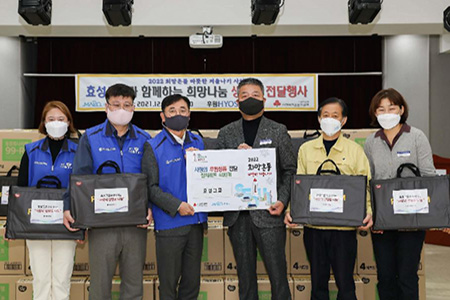
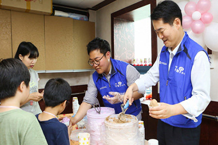
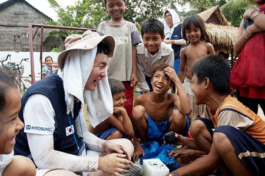
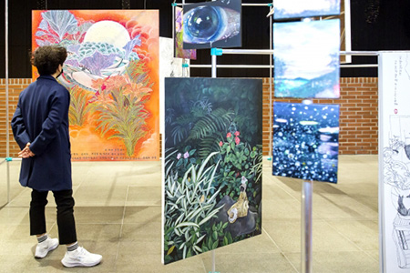

home>지속가능경영> 나눔경영
나눔경영

“효성의 다양한 공헌의 활동을 만나보세요”

-
나눔으로
함께 하겠습니다- 효성그룹과 조현준 회장의 나눔경영
- 조현준 회장은“기업인으로서 경영과 투자에 매진해 경제 활성화에 기여함은 물론 이웃들에게 실질적인 도움을 드릴 수 있도록 사회적 책임을 다할 것”이라고 밝히고 효성그룹의 사회공헌 참여문화를 만들고 있습니다. 효성은 함께하는 사회를 만들기 위해 '취약 계층의 자립과 안정적 생계 지원', '문화 예술 후원', '호국보훈'을 3대 중점 과제로 지속적인 관심을 갖고 사회공헌 활동에 적극 나서고 있습니다.
-

- 지역나눔
- 효성의 사업장 별 지역 나눔활동은 인근 저소득층 대상 사랑의 쌀/김장김치 활동부터 마을재생활동, 마포구 저소득층 희망나눔 페스티벌 후원, SNS와 연계한 인근 지역 생필품 지원 등으로 이어지고 있습니다. 조현준 회장을 비롯한 경영진들의 솔선수범으로 함께 잘사는 세상, 모두가 행복한 나라를 만들기 위해 노력하고 있습니다.
-

- 저소득층 봉사활동 지원
- 기업의 사회공헌 활동은 다 함께 행복한 사회를 만드는 데 보탬이 되겠다는 가치의 실천이므로 무엇보다 진정성이 담겨 있어야 합니다. 굿윌스토어 운영을 통한 장애/저소득층 일자리창출 및 리사이클링문화 확산에 기여하고 있습니다.조현준 회장은 "지속적인 후원이 장애아동이나 청소년이 온전한 사회 구성원으로 거듭나는데 보탬이 되기를 바란다"고 강조하기도 했습니다.
-

- 글로벌나눔
- 더 행복한 세상을 만들기 위한 효성의 사회공헌은 국경을 뛰어 넘습니다. 효성은 2017년 조현준 회장 취임 이후 베트남에서 매년 1천여명 이상의 주민을 치료하는 해외 의료봉사단 파견, 고위험환자 한국 초청 수술, 저소득국가 미니도서관 설립, 저개발지역 학교 컴퓨터 기증 등을 통해 글로벌 시민들의 신뢰를 받고 사랑을 받는 기업이 되고자 사회공헌 활동을 강화하고 있습니다.
-

- 문화예술후원
- 문화예술 분야에 대한 후원 활동은 소외 계층이 예술을 누릴 기회를 제공하고 나아가 직접 예술 활동에도 참여할 수 있도록 돕는 것을 골자로 하고 있습니다. 경영진의 관심과 참여도 활발해 조현준 회장은 지정문화유산 보존 등에 힘쓰고 있는 재단법인 '아름지기' 창립 멤버이자 집행위원으로 활동하고 있으며, 효성의 임직원들도 정기적으로 창덕궁 문화유산 보호 활동에 참여하고 있습니다.